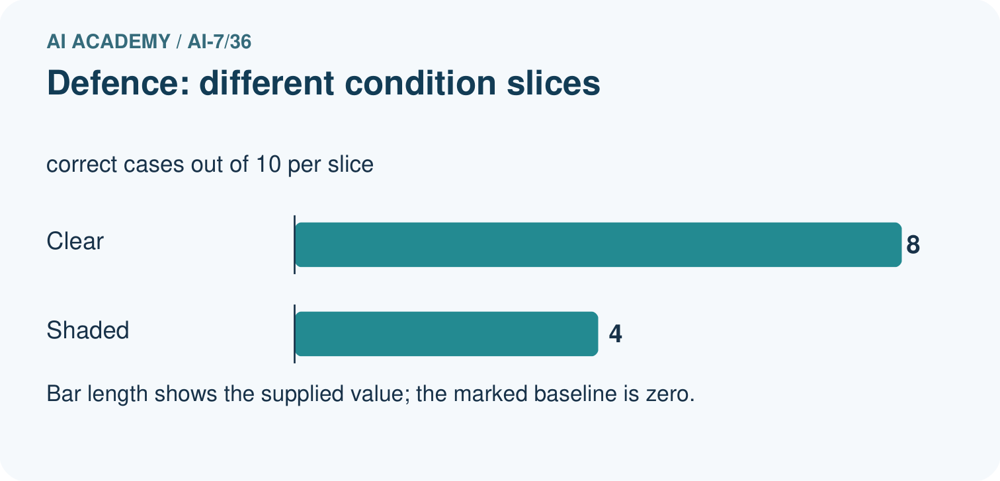
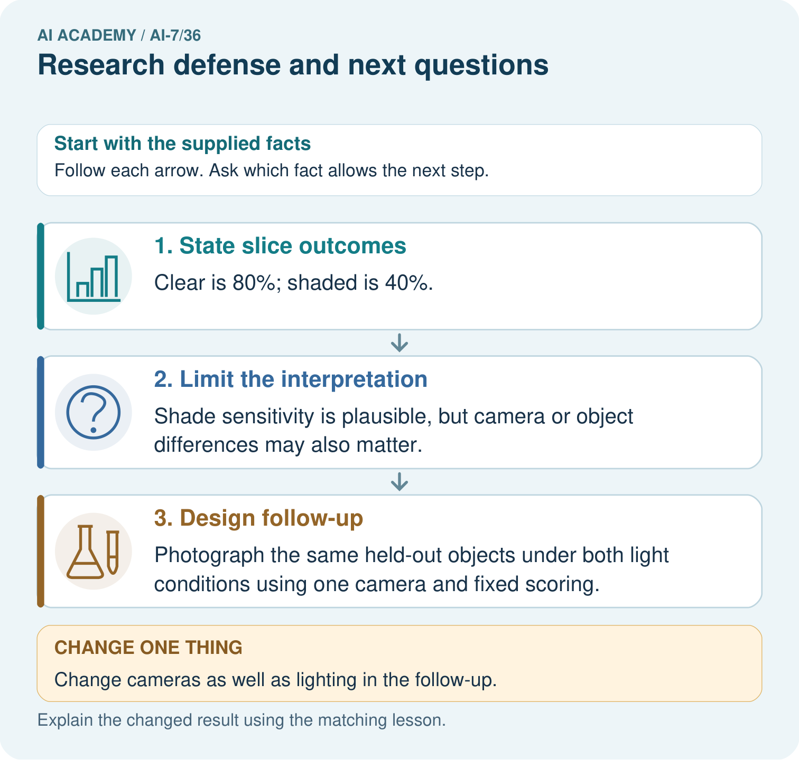
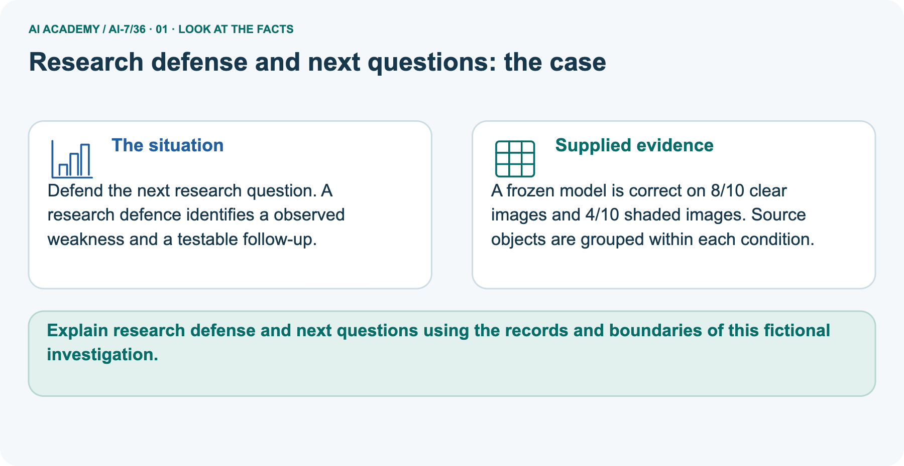
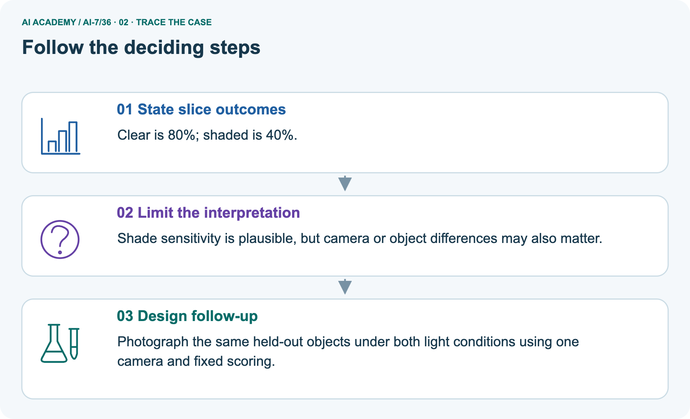
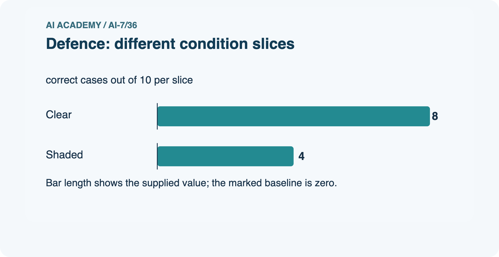
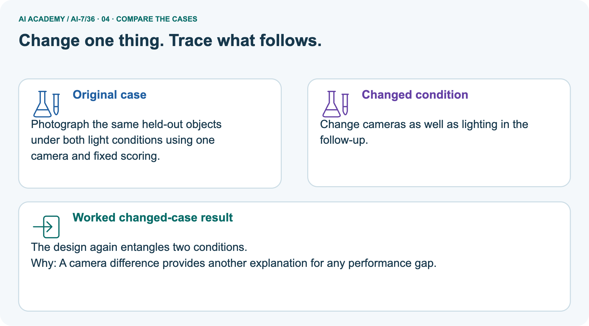
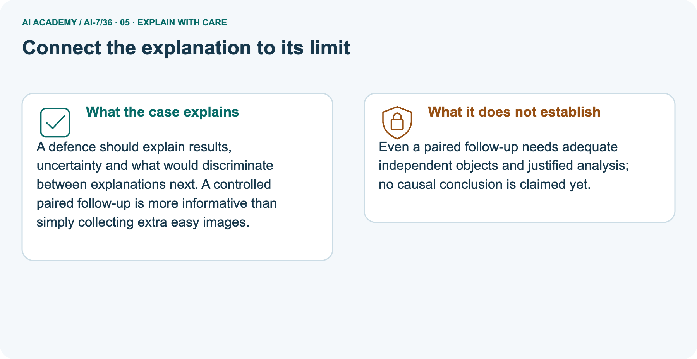
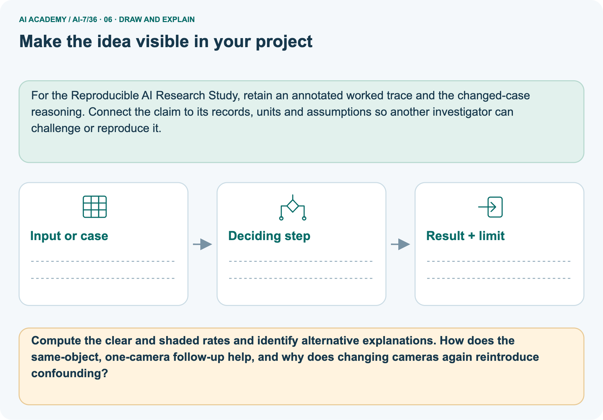

AI Academy · Level 7 · Grade 12 · Week 36 · Workbook
Research defense and next questions
Learn to understand, design, build, test and explain AI systems responsibly.
Project: Reproducible AI Research Study
THE CONNECTED WEEK
One complete research-case evidence record.
Separate descriptive results, computational consistency and untested generalization while proposing a controlled follow-up.
Keep one habit: Recall → W1–W3/W5 → independent case → project evidence → feedback and delayed return.
Main lesson · Section 1
Recall · Retrieve before notes
Keep this task’s inputs,rule and response together.
Complete task and evidence
Try the recall before opening notes. Then use a different colour or a labelled second line to correct your explanation.
Without opening the old lesson, explain one key idea from Presentation and challenge session. Give an example and a mistake that the idea helps you avoid.
Without opening the old lesson, explain one key idea from Independent reproduction check. Give an example and a mistake that the idea helps you avoid.
Without opening the old lesson, explain one key idea from Writing the methods section. Give an example and a mistake that the idea helps you avoid.
Presentation and challenge session
Independent reproduction check
Writing the methods section
Main lesson · Section 5
W1 · Explain the current example
Keep this task’s inputs,rule and response together.
Complete task and evidence
A research defense distinguishes what was measured, what failed, what was computationally recovered and what remains untested. Main candidate 12/16 = 75%, baseline 11/16 = 68.75%, descriptive gain 6.25 percentage points. The stipulated matching replay supports computational consistency, not a fresh-population or user-benefit claim.
Separate frozen-model picture gives clear 8/10 = 80%, shaded 4/10 = 40%, a forty-point gap. Source grouping is stated, but object counts and cross-condition pairing are not supplied. Lighting, camera and object differences are plausible explanations, not established causes.
Propose the same held-out objects under both lights, one camera, fixed scoring, appropriate collection/order controls and justified independent-unit analysis. No such follow-up is run. Changing cameras with lighting entangles explanations again. A limited or negative outcome can complete a sound investigation; retain it and ask a bounded next question instead of manufacturing a positive headline.
Explain the weekly mechanism in your own words. Use the worked scenario to name its input, decision rule and output.
Main lesson · Section 6
W2 · Trace the worked case
Keep the supplied inputs, comparison rule and evidence together.
Complete task and evidence
A research defense distinguishes what was measured, what failed, what was computationally recovered and what remains untested. Main candidate 12/16 = 75%, baseline 11/16 = 68.75%, descriptive gain 6.25 percentage points. The stipulated matching replay supports computational consistency, not a fresh-population or user-benefit claim.
Separate frozen-model picture gives clear 8/10 = 80%, shaded 4/10 = 40%, a forty-point gap. Source grouping is stated, but object counts and cross-condition pairing are not supplied. Lighting, camera and object differences are plausible explanations, not established causes.
Propose the same held-out objects under both lights, one camera, fixed scoring, appropriate collection/order controls and justified independent-unit analysis. No such follow-up is run. Changing cameras with lighting entangles explanations again. A limited or negative outcome can complete a sound investigation; retain it and ask a bounded next question instead of manufacturing a positive headline.
Study shows candidate 12/16 versus baseline 11/16; replay matches; no fresh population sample or user study. Show the intermediate steps and give the conclusion with its scope.
| Main defense component | Supported statement |
|---|---|
| Candidate observed rate | 12/16 = 75% |
| Baseline observed rate | 11/16 = 68.75% |
| Descriptive difference | One of sixteen = 6.25 percentage points |
| Replay matches | Supports recorded computational consistency under the supplied scenario |
| Fresh population / user benefit | Not studied |
| Significance / universal usefulness | Not supplied or established |
| Next work | Resolve a named evidence gap with an explicit new design, not a stronger headline |
Main lesson · Section 7
W3 · Repair a misconception
Keep this task’s inputs,rule and response together.
Complete task and evidence
A research defense distinguishes what was measured, what failed, what was computationally recovered and what remains untested. Main candidate 12/16 = 75%, baseline 11/16 = 68.75%, descriptive gain 6.25 percentage points. The stipulated matching replay supports computational consistency, not a fresh-population or user-benefit claim.
Separate frozen-model picture gives clear 8/10 = 80%, shaded 4/10 = 40%, a forty-point gap. Source grouping is stated, but object counts and cross-condition pairing are not supplied. Lighting, camera and object differences are plausible explanations, not established causes.
Propose the same held-out objects under both lights, one camera, fixed scoring, appropriate collection/order controls and justified independent-unit analysis. No such follow-up is run. Changing cameras with lighting entangles explanations again. A limited or negative outcome can complete a sound investigation; retain it and ask a bounded next question instead of manufacturing a positive headline.
A report omits this qualification: The next question follows evidence gaps; it must not be presented as an answer already obtained.
Explain how omitting it could change a reader's interpretation, and write an accurate replacement.
Main lesson · Section 9
W5 · Explain the limitation
Keep this task’s inputs,rule and response together.
Complete task and evidence
A research defense distinguishes what was measured, what failed, what was computationally recovered and what remains untested. Main candidate 12/16 = 75%, baseline 11/16 = 68.75%, descriptive gain 6.25 percentage points. The stipulated matching replay supports computational consistency, not a fresh-population or user-benefit claim.
Separate frozen-model picture gives clear 8/10 = 80%, shaded 4/10 = 40%, a forty-point gap. Source grouping is stated, but object counts and cross-condition pairing are not supplied. Lighting, camera and object differences are plausible explanations, not established causes.
Propose the same held-out objects under both lights, one camera, fixed scoring, appropriate collection/order controls and justified independent-unit analysis. No such follow-up is run. Changing cameras with lighting entangles explanations again. A limited or negative outcome can complete a sound investigation; retain it and ask a bounded next question instead of manufacturing a positive headline.
For the worked scenario, propose one additional case that could reveal a failure, describe its expected outcome before running it, and explain what would need to remain fixed for a fair comparison.
Do not reuse W4 as a new final test after receiving feedback.
Main lesson · Section 4
Try alone · Selected transfer
Keep this task’s inputs,rule and response together.
Complete task and evidence
Project candidate 9/12, baseline 10/12; reproduction matches. State result and a useful next question.
Attempt this case before feedback. Record any help. Earlier examples below are further practice; a case already practised with feedback cannot establish fresh transfer.
Independent case: Apply a new case independently
Main lesson · Section 10
Project · Keep the research evidence
Preserve the question, protocol, observations, analysis and limits.
Complete task and evidence
For Reproducible AI Research Study, use this week’s independent task as a rehearsal for the final evidence pack: Project candidate 9/12, baseline 10/12; reproduction matches. State result and a useful next question. Keep actual observations separate from expected results, preserve failures, compare a baseline and explain the limits.
Main lesson · Section 11
Feedback · Repair and return
Keep this task’s inputs,rule and response together.
Complete task and evidence
Revisit this idea with your teacher after a delay. Familiarity is different from explaining and using it on a changed case.
| Evidence | My record |
|---|---|
| Worked alone / hint / model | |
| First step I repaired and why | |
| New case checked later; date and result | |
| What I can now explain without notes | |
| One remaining question |
Reference bank and extra practice
Choose the reference that helps your next step.
Reference · Supported W2 record
Reference · Section 2
Reference · Supported W2 record
Keep this task’s inputs,rule and response together.
Complete task and evidence
Use W2: Trace the worked case for Research defense and next questions. Record the answer once; the lesson and workbook refer to the same attempt.
| Given inputs | Procedure I chose | Middle steps | Result and check |
|---|---|---|---|
Extra practice · Individual reasoning check
Reference · Section 3
Extra practice · Individual reasoning check
Keep this task’s inputs,rule and response together.
Complete task and evidence
Use the worked case for Research defense and next questions. Proposed explanation: “The worked result establishes every future case”. Decide whether this explanation is supported.
Point to the step or supplied fact that decides; explain your repair if needed.
Reference · Earlier W4 response copy
Reference · Section 8
Reference · Earlier W4 response copy
Keep this task’s inputs,rule and response together.
Complete task and evidence
Project candidate 9/12, baseline 10/12; reproduction matches. State result and a useful next question.
Extra practice · Pictured case
Reference · Section 12
Extra practice · Pictured case
Keep this task’s inputs,rule and response together.
Complete task and evidence
Defend the next research question. A research defence identifies an observed weakness and a testable follow-up.
A frozen model is correct on 8/10 clear images and 4/10 shaded images. Source objects are grouped within each condition.
Compute the clear and shaded rates and identify alternative explanations. How does the same-object, one-camera follow-up help, and why does changing cameras again reintroduce confounding?
Support used: alone / hint / worked example. This record is practice evidence.
Project connection: For the Reproducible AI Research Study, retain an annotated worked trace and the changed-case reasoning.
Connect the claim to its records, units and assumptions so another investigator can challenge or reproduce it.







Reference · Project milestone
Reference · Section 13
Reference · Project milestone
Keep this task’s inputs,rule and response together.
Complete task and evidence
Project: Reproducible AI Research Study
Current milestone: Present and defend. Demonstrate the system, explain one failure and justify the next improvement with evidence.
For the Reproducible AI Research Study, retain an annotated worked trace and the changed-case reasoning. Connect the claim to its records, units and assumptions so another investigator can challenge or reproduce it.
| Evidence to keep | My record |
|---|---|
| This week’s input and deciding step | |
| Prediction and actual result (or labelled paper trace) | |
| One change since the previous checkpoint and why | |
| One error or limit and the next test |
Extra practice · Predict,check and repair
Reference · Section 14
Extra practice · Predict,check and repair
Keep supported feedback separate from the independent case.
First supported question and optional hint
Defend the next research question. A research defence identifies an observed weakness and a testable follow-up.
Which labelled step matches this detail? Photograph the same held-out objects under both light conditions using one camera and fixed scoring.
1. Design follow-up
2. Limit the interpretation
3. State slice outcomes
Hint if needed: Read the steps in the pictorial case. Match the supplied detail to the stage that performs or records it.
Practice 1: explain the deciding evidence
Check after the first attempt
After your attempt, compare with the supported explanation: Design follow-up Photograph the same held-out objects under both light conditions using one camera and fixed scoring.
A defence should explain results, uncertainty and what would discriminate between explanations next. A controlled paired follow-up is more informative than simply collecting extra easy images.
Changed-case question and optional hint
Changed-case practice: Change cameras as well as lighting in the follow-up. Which conclusion is supported by the supplied facts?
1. We can decide the result without examining the changed input or the procedure.
2. The design again entangles two conditions.
3. This one example guarantees correct results for every future input.
Hint if needed: Use the changed condition and the deciding step in the pictorial trace. The answer must say what follows from those facts.
Practice 2: explain the deciding evidence
Check after the changed attempt
After your attempt, compare with the supported explanation: The design again entangles two conditions. A camera difference provides another explanation for any performance gap.
Repair and retain the record
Review Presentation and challenge session (ai-7/35). Goal: Explain the mechanism and terminology of presentation and challenge session. Short practice: Answer the camera-B challenge using only the twelve camera-A records.
Why is one displayed camera-B success a demonstration rather than broad evidence of camera-B reliability?. Return to this week and explain what you changed.
Review Independent reproduction check (ai-7/33). Goal: Explain the mechanism and terminology of independent reproduction check. Short practice: Locate the Q3 scoring disagreement between 5/6 and 4/6.
What should the teams inspect before choosing a score, and what limitation follows if the saved Q3 file is missing?. Return to this week and explain what you changed.
Review Writing the methods section (ai-7/30). Goal: Explain the mechanism and terminology of writing the methods section. Short practice: Apply the inclusive four-character rule to oak, pine and willow.
Which label changes under greater-than-four, and what method detail allows another team to reproduce the distinction?. Return to this week and explain what you changed.
Use Download completed work in the hosted lesson to export your answers, reflections, practice feedback and code-run evidence. Open the HTML copy to read or print it.
Drafts stay in this browser when storage is available; clear drafts on a shared device.
Earlier wording, alternatives and picture transcripts
Use this supported practice once, in the browser or on paper. Keep the reserved independent assessment for a separate first attempt before teacher feedback.
Repair a missing building block
Keep your completed work
Reference · Six-picture response sheets
Reference · Section 15
Reference · Six-picture response sheets
Choose the picture that helps explain the current step.
01. Research defense and next questions: the case



Defend the next research question. A research defence identifies an observed weakness and a testable follow-up. Supplied facts: A frozen model is correct on 8/10 clear images and 4/10 shaded images.
Source objects are grouped within each condition.
Point to the given fact that matters most. Explain why it matters.
02. Follow the deciding steps



State slice outcomes: Clear is 80%; shaded is 40%. → Limit the interpretation: Shade sensitivity is plausible, but camera or object differences may also matter. → Design follow-up: Photograph the same held-out objects under both light conditions using one camera and fixed scoring.
Point to each numbered stage and explain which recorded input it uses.
03. Defence: different condition slices



Defence: different condition slices. Units: correct cases out of 10 per slice. Clear: 8. Shaded: 4.
Read the labels and values. Explain the relationship the model shows.
04. Change one thing. Trace what follows.



Original case: Photograph the same held-out objects under both light conditions using one camera and fixed scoring. Changed condition: Change cameras as well as lighting in the follow-up.
Expected result: The design again entangles two conditions. Reason: A camera difference provides another explanation for any performance gap.
Predict before checking the worked changed-case result. Name what changed and what the supplied facts allow you to conclude.
05. Connect the explanation to its limit



A defence should explain results, uncertainty and what would discriminate between explanations next. A controlled paired follow-up is more informative than simply collecting extra easy images.
Limit: Even a paired follow-up needs adequate independent objects and justified analysis; no causal conclusion is claimed yet.
Explain the case, then point to a limit on the claim.
06. Make the idea visible in your project



For the Reproducible AI Research Study, retain an annotated worked trace and the changed-case reasoning. Connect the claim to its records, units and assumptions so another investigator can challenge or reproduce it.
Draw your input, deciding step, result and limit. Supported question: Compute the clear and shaded rates and identify alternative explanations.
How does the same-object, one-camera follow-up help, and why does changing cameras again reintroduce confounding?
Draw your project trace and justify the deciding step using evidence.